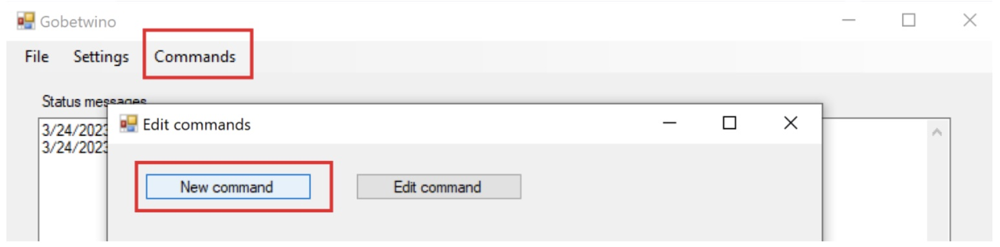
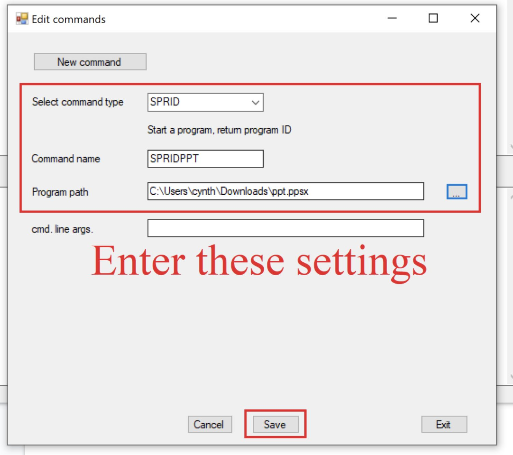

Gobetwino Reference: Arduino to Windows Serial Communication
Last updated: May 12 2023
Gobetwino is a tool designed to allow for
communication between a windows computer in 2009
using only a COM port and serial commands. Nonetheless,
it still works for windows in 2023. The blog the download
link was on is now down. Nonetheless it is possible to download
the tool from web.archive.org.
How to download and run Gobetwino
Step 1: Download Gobetwino 0.5 version .zip file from archive.org
At the end of this step, you will be in the main interface for Gobetwino.
My advice is to read the 'Gobetwino manual.pdf' included in the .zip file to
learn how to use Gobetwino for your purposes. The author of the tool has written a very
easy-to-read manual--better than anything I can provide here. Nonetheless, I will provide
a simple quickstart for controlling Windows programs below.
Quickstart: How to open and send keys to a program using Gobetwino
Step 1: In the Gobetwino.exe interface, create a new command using Command > New Command

Step 2: Enter the below settings and click 'save'
Command type: SPRID
Command name: SPRIDPPT
Program Path: your/application/file/path.extension

Step 3: Create the below Arduino file and upload it to your Arduino
// Modified from: gobetwino\samples\gobetwinoXLtest.pde
// This sketch shows how to:
// 0. Open a .ppsx along with the application
// 1. Press the right arrow key on an opened .ppsx
// 2. Press the left arrow key on an opened .ppsx
// 3. Close the ppt program
///////////// variables for getwino serial commands /////////////
int serInLen = 25;
char serInString[25];
int pId =0;
/////////////////////////////////////////////////////////////////
// the setup function runs once when you press reset or power the board
void setup() {
// initialize digital pin LED_BUILTIN as an output to indicate when ppt being opened
pinMode(LED_BUILTIN, OUTPUT);
// initialize Serial to communicate with getwino
Serial.begin(9600);
}
// the loop function runs over and over again forever
void loop() {
digitalWrite(LED_BUILTIN, HIGH); // turn the LED on (HIGH is the voltage level)
// 0.
///////////// Open ppt /////////////
// My SPRIDPPT command opens a file at: "C:\Users\cynth\Downloads\ppt.ppsx"
// You will have to add the SPRIDPPT command and set it to your file path
Serial.println("#S|SPRIDPPT|[]#"); // Send command
readSerialString(serInString, 5000); // wait 5 seconds (max) for answer from Gobetwino (=porcess ID)
pId= atoi(serInString); // convert result to integer
delay(7000); // wait for 7 more seconds to make sure ppt is open
////////////////////////////////////
digitalWrite(LED_BUILTIN, LOW); // turn the LED off by making the voltage LOW
char buffer[5]; // Used for sending serial instructions in the following commands
// 1.
///////////// Send right arrow key /////////////
// No need to add SENDK command to getwino. It is there already
Serial.print("#S|SENDK|[");
Serial.print(itoa((pId), buffer, 10));
Serial.print("&");
Serial.print("{RIGHT}"); // Send right arrow key
Serial.println("]#");
// wait up to 1000 ms for answer from Gobetwino, answer will be in serInString, answer is 0 if all is OK
readSerialString(serInString, 1000);
//Deal with answer here - omitted in this example
delay(3000); // wait to make sure ppt has changed slides
////////////////////////////////////////////////
// 2.
///////////// Send left arrow key /////////////
Serial.print("#S|SENDK|[");
Serial.print(itoa((pId), buffer, 10));
Serial.print("&");
Serial.print("{LEFT}"); // Send left arrow key
Serial.println("]#");
// wait up to 1000 ms for answer from Gobetwino, answer will be in serInString, answer is 0 if all is OK
readSerialString(serInString, 1000);
//Deal with answer here - omitted in this example
delay(3000); // wait to make sure ppt has changed slides
///////////////////////////////////////////////
// 3.
///////////// Quit ppt /////////////
Serial.print("#S|SENDK|[");
Serial.print(itoa((pId), buffer, 10));
Serial.print("&");
Serial.print("{ESC}");
Serial.println("]#");
// wait up to 1000 ms for answer from Gobetwino, answer will be in serInString, answer is 0 if all is OK
readSerialString(serInString, 1000);
//Deal with answer here - omitted in this example
delay(3000); // wait
////////////////////////////////////
}
///////////// Important function for communicating with getwino /////////////
//read a string from the serial and store it in an array
//you must supply the array variable - will return if timeOut ms passes before the sting is read so you should
//check the contents of the char array before making any assumptions.
void readSerialString (char *strArray,long timeOut)
{
long startTime=millis();
int i;
while (!Serial.available()) {
if (millis()-startTime >= timeOut) {
return;
}
}
while (Serial.available() && i < serInLen) {
strArray[i] = Serial.read();
i++;
}
}
/////////////////////////////////////////////////////////////////////////////
///////////// Information about SENDK returns /////////////
// 0 If the keystrokes was successfully sent to the program.
// -1 If the process ID is not valid.
// -2 If an exception was generated trying to send the keystrokes.
///////////////////////////////////////////////////////////
///////////// Information about SPRIDPPT returns /////////////
// 0 – maxProcesses -1 If the program started a number between 0 and maxProcesses -1 is returned, this is the process ID.
// -1 If maxProcesses programs has already been started.
// -2 If the file in the Program path parameter could not be found.
// -3 If an exception was generated trying to start the program.
//////////////////////////////////////////////////////////////
Step 4: Open Gobetwino.exe with the Arduino connected.
You may need to open the Settings tab in the Gobetwino interface to
change the COM port or baud rate.
Some additional notes:
Serial connection from the Arduino IDE must be CLOSED before opening Gobetwino.exe
Must use Serial.println() when sending commands to Gobetwino. If sending
parameters, then Serial.print() may still be used, but nonetheless the point is the command
must end with a Serial.println().
The format of a command can be broken down into the form:
#S|COMMAND|[param1¶m2&...]#
Ex) #S|LOGTEST|[877]#
Notice that hashtags (#) bound the ends of the command and there is an 'S' in
front of the first hashtag.
More information on the structure of the serial commands can be found in 'Gobetwino manual.pdf'